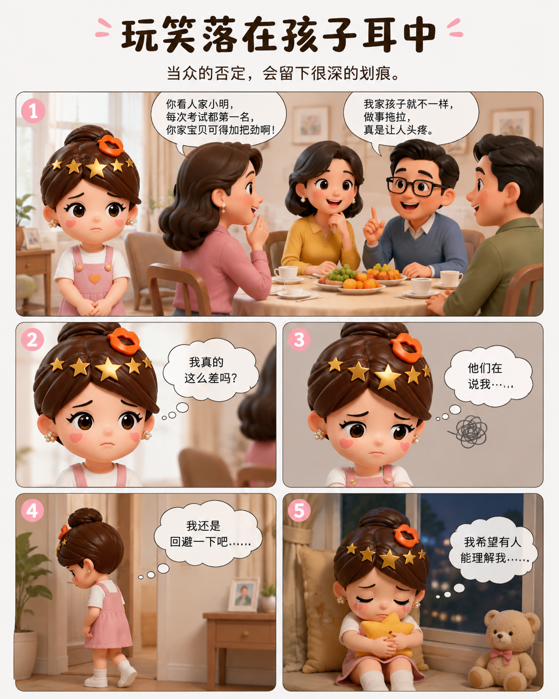
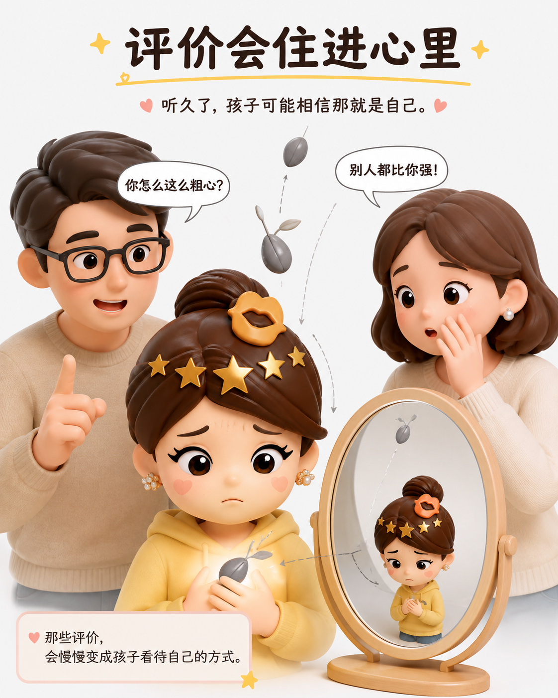
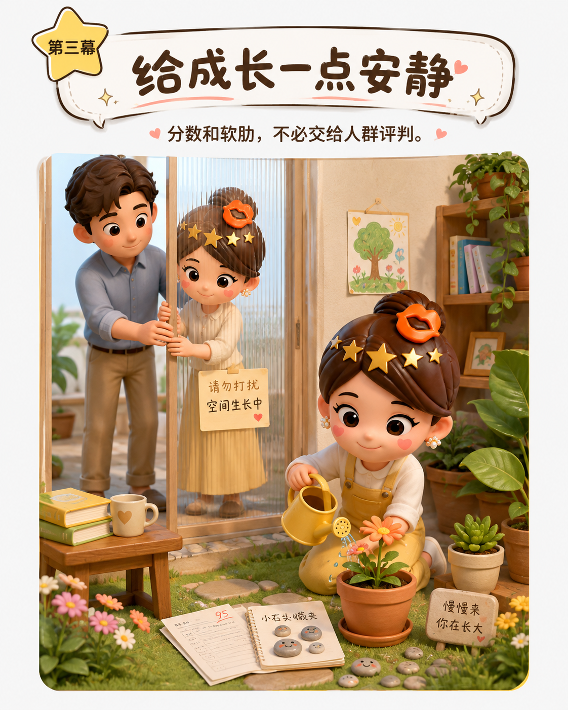
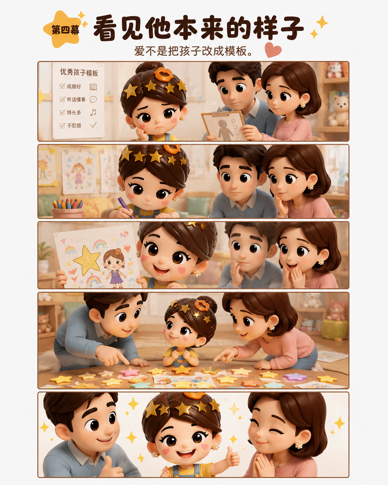
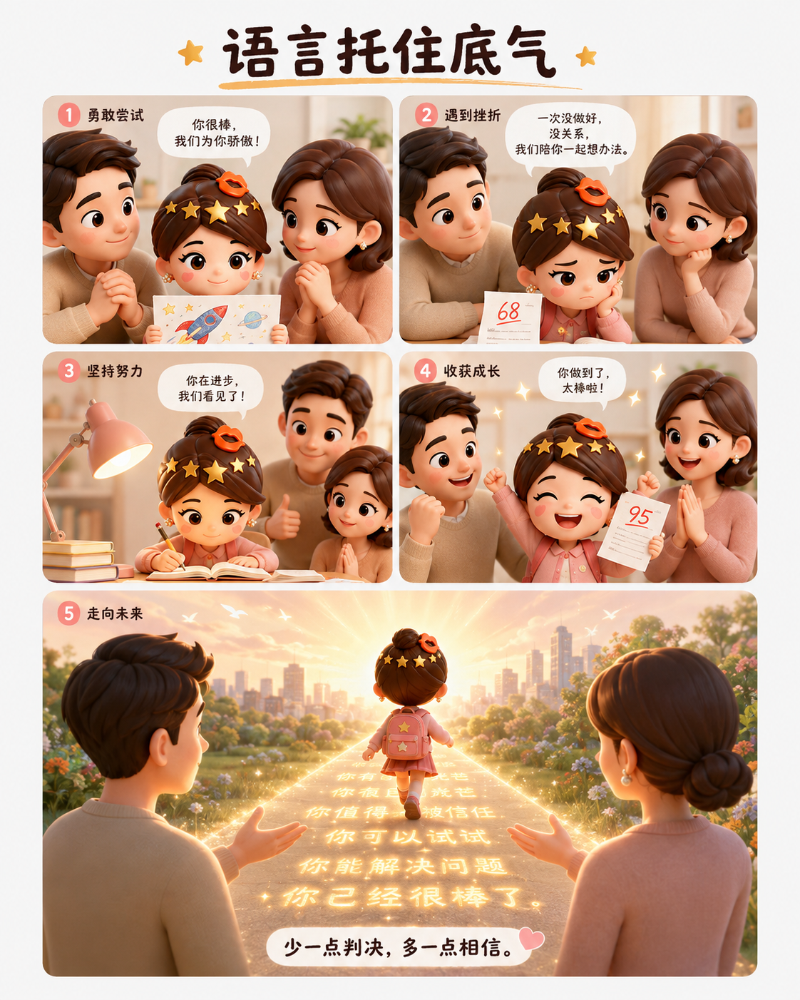

别把孩子的自尊，交给大人的闲谈
01
大人社交时 常不经意间拿孩子做话题 当着众人的面细数他的不足 拿别家孩子的长处 比自家孩子的短处 于大人而言 不过是自谦式的客套 几句随口而出的玩笑 可落在孩子耳中 是一场当众的否定与揭短 孩童的自尊 薄得像一层纸 一次次被人情世故的利刃划破 便再也拼不完整

02
每一句对外人诉说的缺点 都是一颗悄悄埋下的种子 它种在旁人的印象里 也种在孩子的心底 更种在父母自己的心中 孩子对自我的认知 最初都是从父母的评价里长出来的 听久了负面的声音 便会在心底生出回响： “我大概就是这样差劲的人了吧。”

03
成长这件事 适合安静沉淀 分数 挫败 软肋 是孩子心里最柔软的地方 不必摊开来供人围观 逢人少谈孩子的境遇 不炫耀 不揭短 不诉苦 便是给了孩子一个 不被指点的童年

04
真正到位的养育 是看见孩子原本的样子 而不是要他活成预设的模板 多看闪光之处 少做否定之语 多给期许之光 少下判决之词 爱是如他所是 而非如你所愿 言语自带塑造力量 不去消耗孩子自尊 才能托住他内心成长的底气

